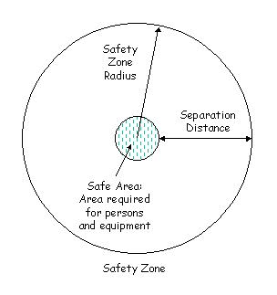
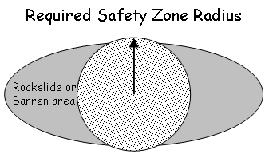

|
|
Safety Zone Size |
Safety zone size is the area of a circular safety zone just large enough to protect the specified number of personnel and heavy equipment from radiant burn injury. Calculation is based on the safety zone radius, which is estimated from flame height. Flame length can be calculated for a surface fire in SURFACE and used as a worst-case estimate of flame height. Flame height must be entered by the user for a crown fire. Although crown fire flame length can be calculated in CROWN, there is not a link to SAFETY.
|
I/O |
Module |
If |
Notes |
|
Input |
None |
|
|
|
Output |
SAFETY |
|
|
|  |
The area of a circle is the smallest area that provides the required separation distance. A non-circular safety zone that provides the required protection on all sides will have a greater area than calculated here. For example, the existing elliptical safety zone shown below has a much greater area than the required circular Safety Zone Size, but does not provide the required separation along the sides.
|  |